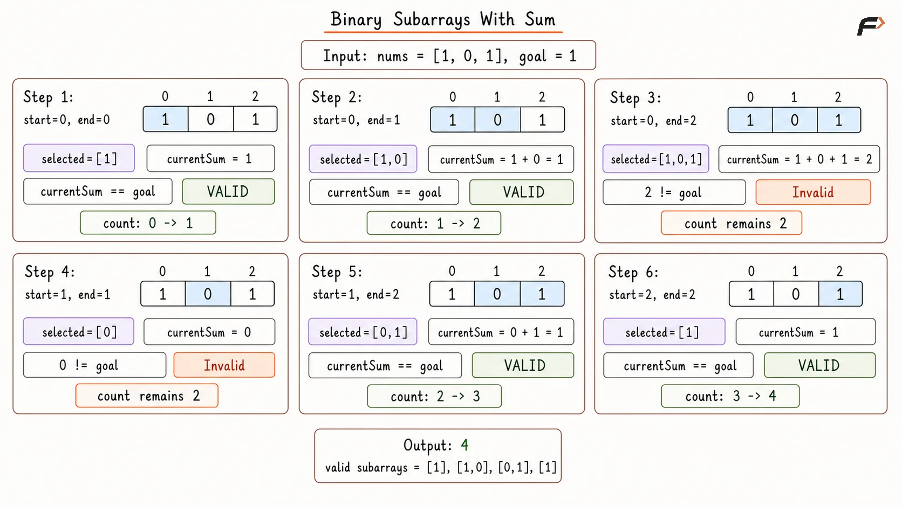
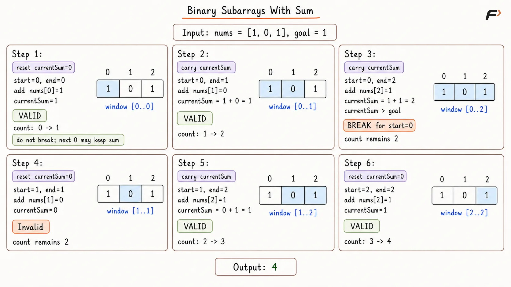
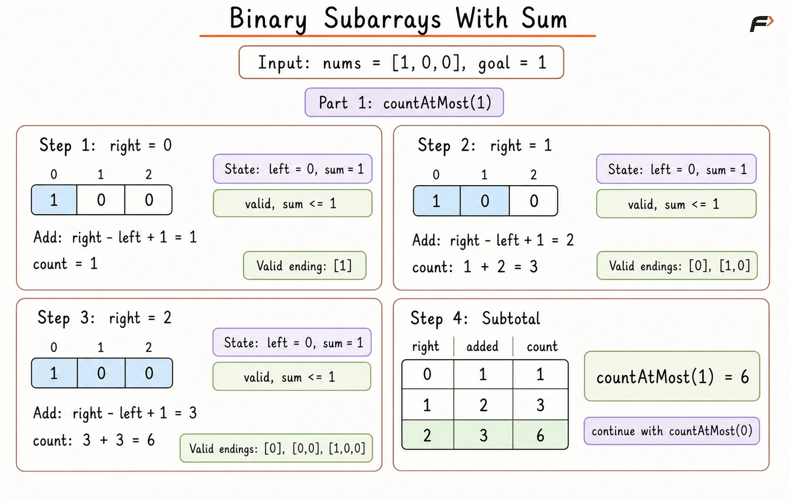

Binary Subarrays with a Given Sum: Count All Matches
Given a binary array nums and an integer goal, return the number of non-empty subarrays with sum equal to goal.
A subarray is a continuous part of the array.
Since nums contains only 0s and 1s, the sum of a subarray is simply the number of 1s present inside it.
Example 1
Input: nums = [1, 0, 1, 0, 1], goal = 2
Output: 4
Explanation: The subarrays with sum 2 are [1, 0, 1], [1, 0, 1, 0], [0, 1, 0, 1], and [1, 0, 1].
Example 2
Input: nums = [0, 0, 0, 0, 0], goal = 0
Output: 15
Explanation: Every subarray has sum 0, so all 15 subarrays are valid.
Brute Force Approach
Every possible subarray can be checked independently. For each selected range, calculate its sum from scratch and increase the answer whenever the sum equals goal.
This guarantees that every valid subarray is counted, but overlapping ranges repeatedly calculate the same sums.
Algorithm
The size of the array is stored in n. If n is 0, 0 is returned because no non-empty subarray can be formed.
A variable count is initialized with 0. This stores the number of subarrays whose sum is exactly equal to goal.
Two loops are used to generate every possible subarray. The first loop chooses the starting index start, and the second loop chooses the ending index end.
For every subarray from start to end, another loop is used to calculate the sum of all elements in that range.
If the calculated sum is equal to goal, it means the current subarray is valid, so count is increased by 1.
After all subarrays are checked, count is returned as the final answer.
Dry Run

Binary Subarrays With Sum Brute Force Dry Run.png
Solution
#include <bits/stdc++.h>
using namespace std;
class Solution {
public:
// Counts subarrays whose sum is exactly equal to goal.
int numSubarraysWithSum(vector<int>& nums, int goal) {
int n = nums.size();
// No non-empty subarray can be formed.
if (n == 0) {
return 0;
}
int count = 0;
// Choose every possible starting index.
for (int start = 0; start < n; start++) {
// Choose every possible ending index for the current start.
for (int end = start; end < n; end++) {
int currentSum = 0;
// Calculate the sum of the selected subarray from scratch.
for (int i = start; i <= end; i++) {
currentSum += nums[i];
}
// Count the subarray when its sum matches the goal.
if (currentSum == goal) {
count++;
}
}
}
return count;
}
};
int main() {
vector<int> nums = {1, 0, 1, 0, 1};
int goal = 2;
Solution solution;
cout << solution.numSubarraysWithSum(nums, goal)
<< endl;
return 0;
}Complexity Analysis
Time Complexity: O(N³), where N is the size of the array. There are O(N²) possible subarrays, and calculating the sum of each subarray can take O(N) time.
Space Complexity: O(1), because no extra data structure is used. Only a few variables are required.
Better Approach
Instead of recalculating the sum for every range, fix start and keep a running sum while end moves right.
Because the array contains only 0s and 1s, the sum never decreases during expansion. Therefore, once it becomes greater than goal, no later ending for that same start can produce the required sum.
Algorithm
The size of the array is stored in n. If n is 0, 0 is returned because no subarray can be formed.
A variable count is initialized with 0 to store the number of subarrays whose sum is exactly equal to goal.
The array is traversed using start as the starting index of the subarray. For every start, currentSum is initialized with 0 because a new subarray is being built.
The end pointer moves from start to the end of the array. At every step, nums[end] is added to currentSum.
If currentSum becomes equal to goal, count is increased because the subarray from start to end has the required sum.
If currentSum becomes greater than goal, the loop is stopped for this start. This is safe because nums contains only 0s and 1s, so adding more elements cannot reduce the sum. After all starting positions are checked, count is returned.
Dry Run

Binary Subarrays With Sum Better Appraoch Dry Run.png
Solution
#include <bits/stdc++.h>
using namespace std;
class Solution {
public:
// Counts valid subarrays by maintaining a running sum from each start.
int numSubarraysWithSum(vector<int>& nums, int goal) {
int n = nums.size();
// No non-empty subarray can be formed.
if (n == 0) {
return 0;
}
int count = 0;
// Choose every possible starting index.
for (int start = 0; start < n; start++) {
int currentSum = 0;
// Extend the subarray while maintaining its running sum.
for (int end = start; end < n; end++) {
currentSum += nums[end];
// Count every range whose sum matches the goal.
if (currentSum == goal) {
count++;
}
// Further expansion cannot reduce the sum in a binary array.
if (currentSum > goal) {
break;
}
}
}
return count;
}
};
int main() {
vector<int> nums = {1, 0, 1, 0, 1};
int goal = 2;
Solution solution;
cout << solution.numSubarraysWithSum(nums, goal)
<< endl;
return 0;
}Complexity Analysis
Time Complexity: O(N²), where N is the size of the array. For every starting index, the ending index may move toward the right until the sum becomes greater than goal.
Space Complexity: O(1), because only variables like currentSum and count are used.
Optimal Approach
Counting exact-sum windows directly is difficult because zeros can create multiple valid starting positions. Instead, count subarrays with sum at most a limit.
countAtMost(goal) contains sums up to goal, while countAtMost(goal - 1) contains all smaller sums. Their difference therefore leaves exactly the subarrays whose sum is goal.
Since every value is non-negative, a sliding window can count each at-most group in linear time.
Algorithm
A helper function countAtMost is created to count the number of subarrays whose sum is less than or equal to a given limit. If limit is less than 0, 0 is returned because a binary subarray cannot have a negative sum.
Inside countAtMost, three variables are initialized: left is set to 0 to represent the left boundary of the window, currentSum is set to 0 to store the sum of the current window, and count is set to 0 to store valid subarrays.
The right pointer moves from 0 to n - 1. At every step, nums[right] is added to currentSum because it is now included in the window.
If currentSum becomes greater than limit, the window is shrunk from the left. nums[left] is subtracted from currentSum and left is moved forward until the window sum becomes less than or equal to limit again.
Once the window is valid, all subarrays ending at right and starting from any index between left and right are valid. So, right - left + 1 is added to count.
Finally, the answer is calculated as countAtMost(goal) - countAtMost(goal - 1), which gives the number of subarrays with sum exactly equal to goal.
Dry Run

Diagram 1
Solution
#include <bits/stdc++.h>
using namespace std;
class Solution {
private:
// Counts subarrays whose sum is at most the given limit.
int countAtMost(vector<int>& nums, int limit) {
// A binary subarray cannot have a negative sum.
if (limit < 0) {
return 0;
}
int left = 0;
int currentSum = 0;
int count = 0;
// Expand the window using each index as the right boundary.
for (int right = 0; right < nums.size(); right++) {
currentSum += nums[right];
// Shrink until the window sum becomes valid again.
while (currentSum > limit) {
currentSum -= nums[left];
left++;
}
// Every start from left to right forms a valid subarray.
count += right - left + 1;
}
return count;
}
public:
// Counts subarrays whose sum is exactly equal to goal.
int numSubarraysWithSum(vector<int>& nums, int goal) {
return countAtMost(nums, goal)
- countAtMost(nums, goal - 1);
}
};
int main() {
vector<int> nums = {1, 0, 1, 0, 1};
int goal = 2;
Solution solution;
cout << solution.numSubarraysWithSum(nums, goal)
<< endl;
return 0;
}Complexity Analysis
Time Complexity: O(N), where N is the size of the array. The helper function countAtMost runs in O(N), and it is called twice. So, the overall time complexity is O(2N), which simplifies to O(N).
Space Complexity: O(1), because only a few variables are used and no extra data structure is required.
FAQs
Q1. Why do we use countAtMost(goal) - countAtMost(goal - 1)?
countAtMost(goal) includes subarrays with sum 0, 1, 2, ..., goal. countAtMost(goal - 1) removes all subarrays with sum less than goal. The remaining subarrays have sum exactly equal to goal.
Q2. Why do we add right - left + 1 in countAtMost?
After the window becomes valid, every subarray ending at right and starting from any index between left and right has sum at most limit. There are right - left + 1 such subarrays.
Q3. Why does countAtMost return 0 when limit is negative?
A binary subarray cannot have a negative sum. So, when limit is negative, no valid subarray exists.
Q4. Does this approach handle goal equal to 0?
Yes. The answer becomes countAtMost(0) - countAtMost(-1). Since countAtMost(-1) returns 0, only subarrays with sum exactly 0 are counted.